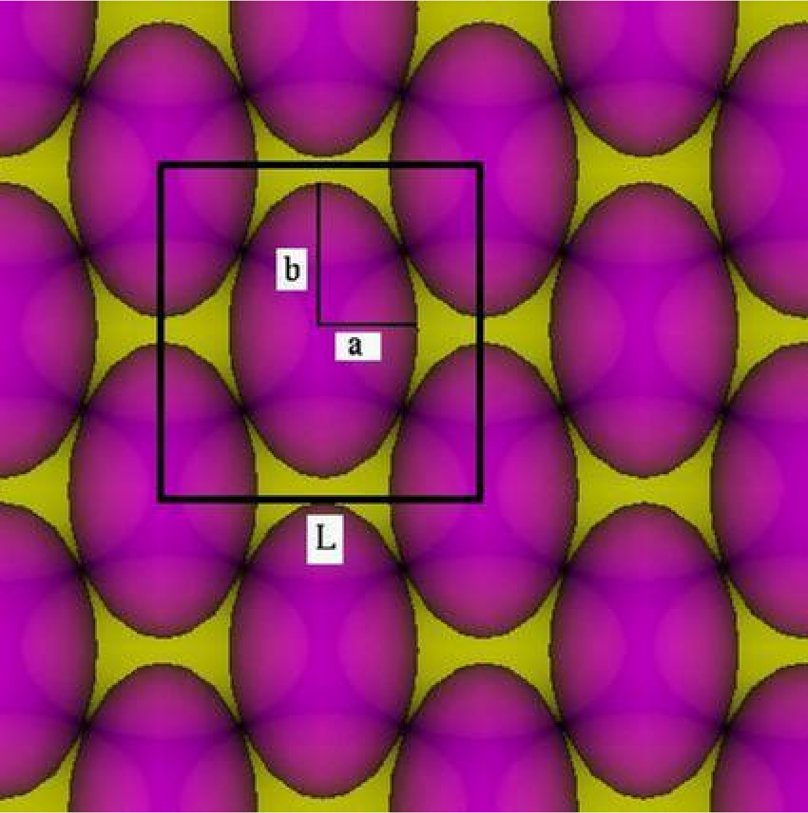
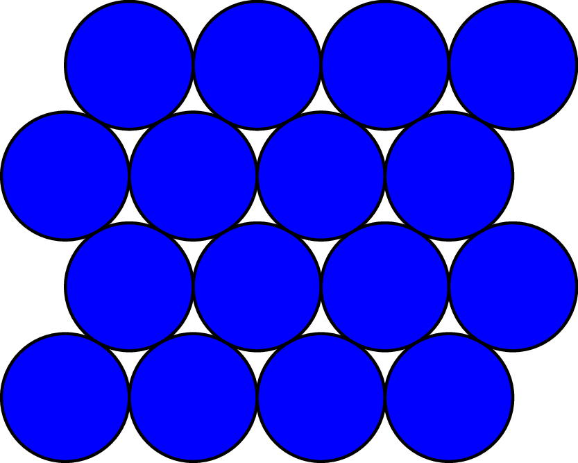

Random, optimal, and thermal packing of aspherical shapes
|
Packing of Continua Workshop |
Spheres vs. regular tetrahedra
Equilibrium and metastability
|
|
|
 Haji-Akbari, Engel, & Glotzer. J Chem Phys (2011).
Haji-Akbari, Engel, & Glotzer. J Chem Phys (2011).
Random close packing
|
|
|

Isostatic if face-face = 3 contacts, face-edge = 2, vertex-face = 1, edge-edge = 1
Ellipsoids
|
 |
|
Ulam's conjecture
|
|
|
Disk is not worst in 2D
|
 |
|
|
Optimal packing of nearly-circular shapes
Optimal packing of nearly-circular shapes
Optimal packing of nearly-circular shapes
Optimal packing of nearly-circular shapes
|
In general, for centrally-symmetric shapes: |
So, for a family $r_K(\theta) = 1 + \alpha \rho(\theta) + o(\alpha)$,
we have $d\phi/d\alpha \ge 0$.
$d\phi/d\alpha = 0$ is possible, e.g., for $\rho(\theta) = \cos(8\theta)$.
Optimal packing of nearly spherical shape
|
In 3D, for centrally-symmetric shapes: $\displaystyle{\Delta\phi/\phi = 3\overline{\delta r} - 3\min_R \sum_{n=0}^{11}\delta r(R\mathbf{x}_i) + o(\|\delta r\|)}$, where $\delta R:S^2\to\mathbb{R}$, $R\in SO(3)$, and $\mathbf{x}_i$ are the 12 f.c.c. contact directions. Lemma: $\min_R \sum_{n=0}^{11}\delta r(R\mathbf{x}_i) = \overline{\delta r}$ iff $\delta r(\mathbf{x}) = a + (\mathbf{b}\cdot\mathbf{x})^2$. So, any centrally symmetric shape, apart from ellipsoids has $\phi(K)-\phi(B) \ge c \|\delta r\|$, for some constant $c$. |
Random close packing (no friction)
Start from a RCP of spheres, then continuously to another shape, keeping particle $i$'s rotation $R_i$ locked:
$\displaystyle{p\Delta V = \sum_i \sum_{j\in \partial i} f_{ij} \delta r(R_i \mathbf{n}_{ij}) + O(V\|\delta r\|^{3/2})}$
Rotation is free for spheres, but at start of deformation, particles under pressure will take rotation that minimizes volume, so
for $r(\mathbf{x}) = 1 + \alpha \rho(\mathbf{x}) + o(\alpha)$
$\displaystyle{\frac{1}{3\phi}\frac{d\phi}{d\alpha} = \overline{\rho} - \frac{1}{\langle|\partial i|\rangle \langle f\rangle}
\big\langle \min_R \sum_{j\in \partial i} f_{ij} \rho(R \mathbf{n}_{ij})\big\rangle}$
$d\phi/d\alpha>0$ for all nonconstant $\rho$ (and for all dimensions)
We can numerically calculate $\eta=(\tfrac1{3\phi} \tfrac{d\phi}{d\alpha})/(\overline{|\rho-\overline{\rho}|})$ for given $\rho$
Some 1-parameter shape families
|
$\eta=0.94$
$\eta=0.79$
$\eta=0.86$
|
$\eta=1.08$
$\eta=1.36$
$\eta=0.77$
|
$\eta=1.45$
$\eta=1.06$
$\eta=1.31$
|
$\eta=1.01$
$\eta=1.32$
$\eta=1.20$
|